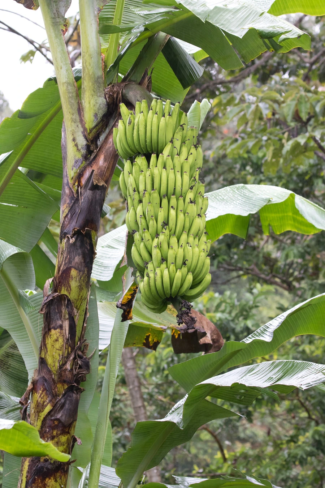

农作物与经济植物 · 植物界
香蕉 Musa acuminata

香蕉是热带地区重要的水果与粮食作物，果实富含淀粉和钾，栽培上以无性繁殖为主，全球贸易量巨大。
- 分类
- 门被子植物门纲单子叶植物纲目姜目科芭蕉科属芭蕉属
- 栖息环境
- 热带高温高湿地区，喜充足阳光、深厚肥沃与排水良好的土壤
- 地理分布
- 原产东南亚，现主产于印度、中国、菲律宾、厄瓜多尔等热带国家
- 保护级别
- 暂无评估（栽培作物）；野生近缘种需保护
物种志
香蕉是芭蕉科多年生大型草本，其实并非树木，所谓“树干”是由叶鞘层层包裹形成的假茎，高 2–5 m。叶片巨大，长椭圆形，长可达 2–3 m，有粗壮中脉和许多平行侧脉，叶柄基部抱合成假茎。花序为顶生穗状花序，下垂，苞片紫红色，基部雌花发育成果实，形成一串香蕉；果实为浆果，弯曲成梳状，成熟时黄色，果肉软甜无籽。
香蕉原产东南亚，由野生小果野蕉和野蕉杂交演化而来，约 8000 年前在新几内亚一带被驯化，后传播到热带各地。它喜高温高湿、阳光充足，适宜在土层深厚、排水良好的热带地区栽培，通常用吸芽或组培苗无性繁殖。香蕉果实富含碳水化合物和钾，可鲜食，也可蒸煮、制干；部分品种（如大蕉）是热带地区的主粮。由于栽培香蕉多为三倍体、遗传单一，易受枯萎病威胁，育种和病害防控十分重要。
形态与习性
- 假茎由叶鞘包裹而成，高 2–5 m
- 叶长椭圆形，长可达 2–3 m
- 果实浆果，成梳状排列
- 繁殖吸芽或组培苗无性繁殖
- 主要用途鲜食、制干，大蕉可作主粮
- 原产地东南亚
- 主要成分富含钾与碳水化合物
趣味知识
- 香蕉树其实不是树，所谓的“树干”是由一层层叶鞘包裹成的假茎。
- 野生香蕉有硬籽，我们吃的香蕉是三倍体，种子退化得几乎看不见。
- 香蕉是少数富含钾的水果，常被运动员用来补充能量。